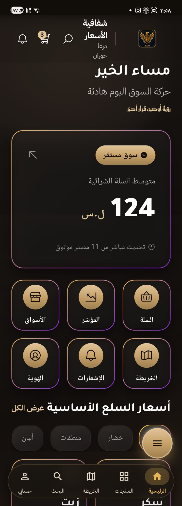
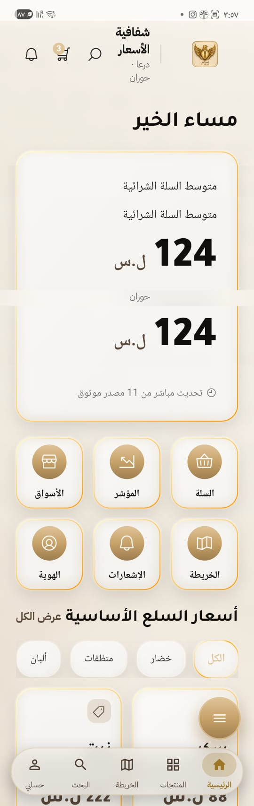
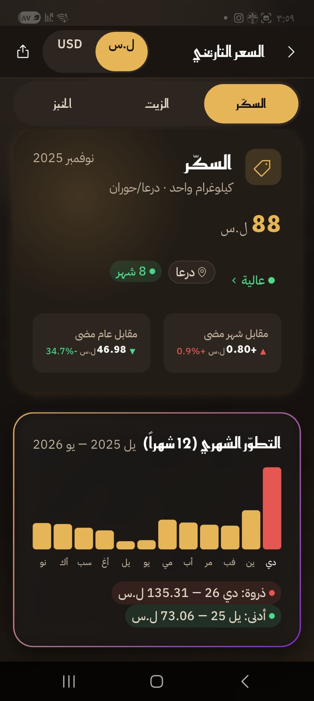
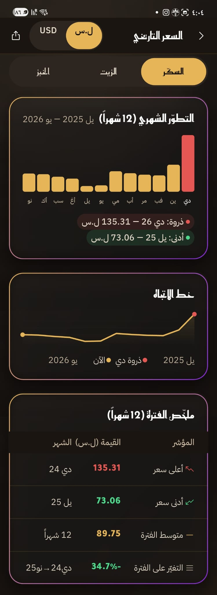
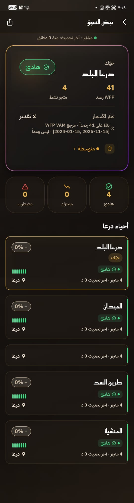
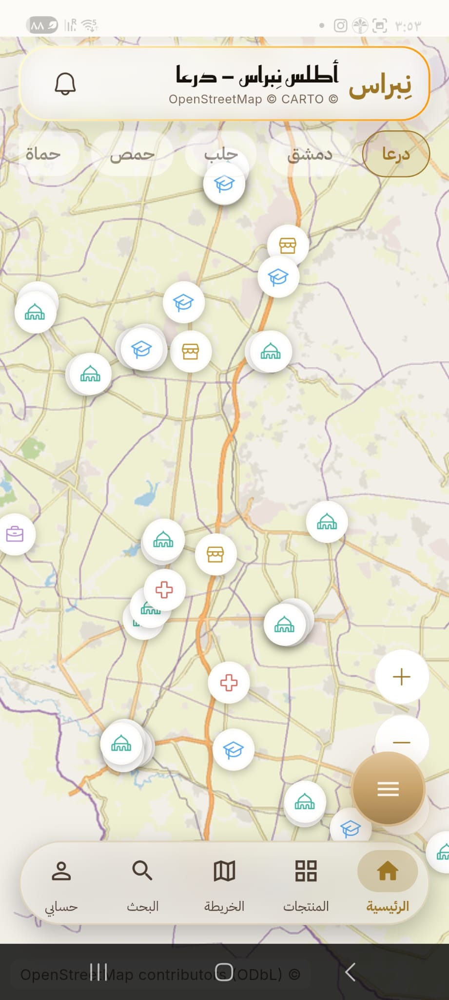
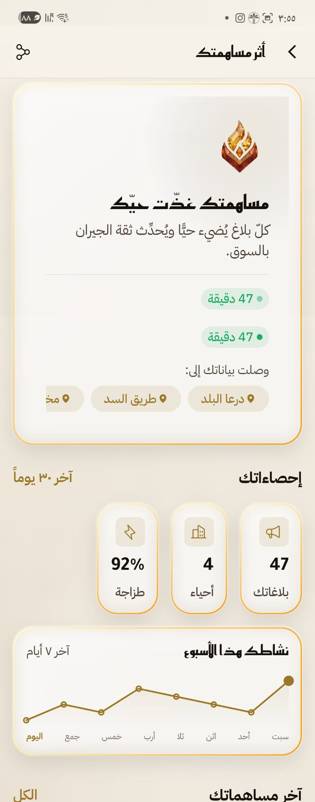

SELECTED WORK · KHALED ALREFAI
NIBRAS / نِبراس
A small public window into a much larger project.
Formerly SMPI. Local market information, Arabic product design, trust and place.
This is only a brief glimpse into the depth and scale of the wider project. The full source and internal work remain private.
Genuine screenshots captured on the owner's physical device. Interface values are shown as development examples, not verified current market data or adoption statistics.
Read the project story ↗Explore eight selected interactive design studies ↗

An Arabic starting point
A dashboard that brings local market context into one place.

One identity, different lighting
The light appearance of the same product direction.

A price has a history
Product, location, period and comparison belong beside the number.

Reading changes over time
A captured price-history view, presented as interface evidence.

Local market context
A view of the market pulse around Daraa.

Place changes the question
The atlas connects the experience to local geography.

Participation has a place
A captured contributor interface, not a claim about live adoption.
Selected HTML design studies
Rendered design demonstrations with example data, alongside the physical-device captures above.